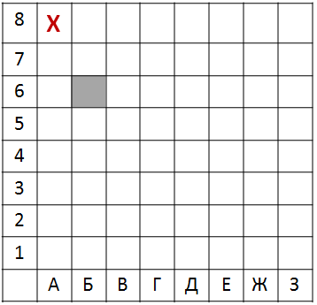

Информатика ОГЭ:
Разбор задания №5
У исполнителя Альфа две команды, которым присвоены номера:
1. прибавь 1
2. умножь на b
(b – неизвестное натуральное число; b ≥ 2)
Первая из них увеличивает число на экране на 1, втора умножает его на b. Алгоритм для исполнителя Альфа – это последовательность номеров команд.
Найдите значение числа b, при котором из числа 6 по алгоритму 11211 будет получено число 82.
Решение:
- Запишем все действия исходной программы 11211. Учтем, что исходное число — 6. В целях соблюдения верной последовательности операций будем использовать скобки:
команды
1: (6 + 1)
11: (6 + 1) + 1
112: ((6 + 1) + 1) * b
1121: (((6 + 1) + 1) * b) + 1
11211: ((((6 + 1) + 1) * b) + 1) + 1
-
В результате программы алгоритм выдает число 82. Значит, выполним уравнение:
((((6 + 1) + 1) * b) + 1) + 1 = 82
-
Упростим уравнение и найдем неизвестное b:
((((6 + 1) + 1) * b) + 1) + 1 = 82
8 * b + 2 = 82
8 * b = 80
b = 10
Ответ: 10
Вторая задача:
Исполнитель Чертёжник перемещается на координатной плоскости, оставляя след в виде линии. Чертёжник может выполнять команду Сместиться на (a, b) (где a, b — целые числа), перемещающую Чертёжника из точки с координатами (x, у) в точку с координатами (x + а, у + b). Если числа a, b положительные, значение соответствующей координаты увеличивается; если отрицательные — уменьшается.
Чертёжнику был дан для исполнения следующий алгоритм:
Повтори 3 paз
Сместиться на (-2, -3) Сместиться на (3, 2) Сместиться на (–4, 0)
конец
На какую одну команду можно заменить этот алгоритм, чтобы Чертёжник оказался в той же точке, что и после выполнения алгоритма?
1) Сместиться на (–9, –3)
2) Сместиться на (–3, 9)
3) Сместиться на (–3, –1)
4) Сместиться на (9, 3)
Решение:
- Вспомним, что команда Повтори n, означает умножение последующих параметров на n (вплоть до команды Конец).
-
Предположим, что Чертежник начал движение с начала координатной плоскости (x=0, y=0). Исходя из этого предположения рассчитаем его перемещение по оси ox и oy:
по оси ox:
3 * (-2 + 3 - 4) = 0 (начало с 0) => по оси ox = -9
по оси oy:
3 * (-3 + 2 + 0) = 0 (начало с 0) => по оси ox = -3
- То есть этот алгоритм можно заменить на команду Сместиться на (–9, –3). Это соответствует варианту 1.
Ответ: 1
Третья задача:
Исполнитель Муравей перемещается по полю, разделённому на клетки. Размер поля 8×8, строки нумеруются числами, столбцы обозначаются буквами. Муравей может выполнять команды движения:
- Вверх N
- Вниз N
- Вправо N
- Влево N
(где N — целое число от 1 до 7), перемещающие исполнителя на N клеток вверх, вниз, вправо или влево соответственно.
Запись
Повтори k раз
Команда1 Команда2 КомандаЗ
Конец
означает, что последовательность команд Команда1 Команда2 КомандаЗ повторится k раз. Если на пути Муравья встречается кубик, то он перемещает его по ходу движения.
Пусть, например, кубик на ходится в клетке Б6. Если Муравей выполнит команды вправо 1 вниз 3 , то сам окажется в клетке Б5, а кубик в клетке Б4.
Пусть Муравей и кубик расположены так, как указано на рисунке. Муравью был дан для исполнения следующий алгоритм:
Повтори 4 раз
Вниз 2 вправо 1 вверх 2
Конец
В какой клетке окажется кубик после выполнения этого алгоритма?
- Г6
- Е4
- Д1
- Е6
Решение:
- Заметим, что после исполнения команд вниз 2 вверх 2, Муравей окажется в той же клетке, из которой он начал движение:
Повтори 4 раз
Вниз 2 вправо 1 вверх 2
Конец
- Между этими командами остается команда вправо 1, которая выполняется 4 раза.
- Рассмотрим движение муравья за 1 повтор на рисунке:
- Оказавшись в клетке Б8, Муравей сдвинул кубик в клетку В6.
- Изначально кубик находится в клетке Б6. Выполнив четыре повтора, Муравей передвинет кубик в клетку Е6.
- Верный ответ указан под номером 4.
Ответ: 4) E6